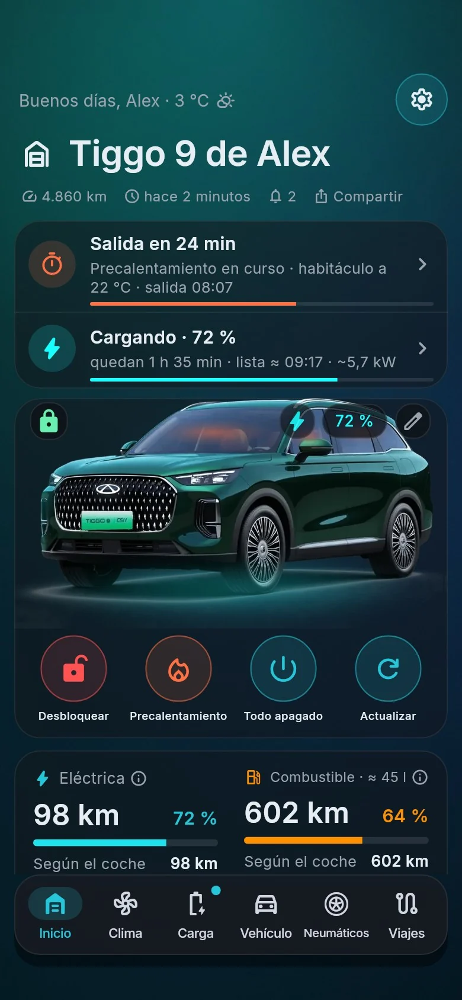
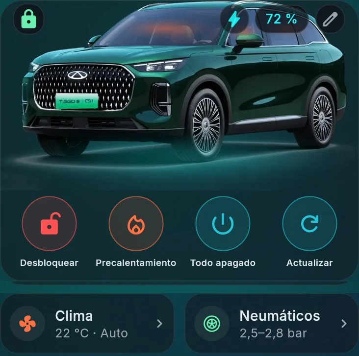
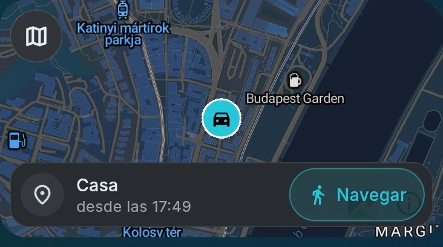
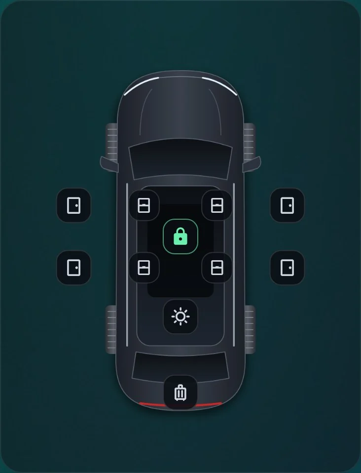
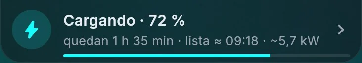
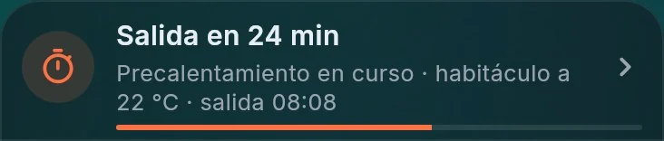

Estado de un vistazo
Todo sobre tu coche, en una sola pantalla.
Batería, combustible y autonomía, cierre, puertas y ventanillas, neumáticos y dónde está aparcado – actualizado las 24 horas, con tu propio coche en su color real.


Batería, combustible y autonomía de un vistazo.
La pantalla de inicio abre con lo que más consultas: el nivel de carga y la autonomía eléctrica, el nivel de combustible y cuánto te queda con él. La estimación de autonomía propia de Carmeo también cubre la parte de gasolina, y con el selector Coche | Carmeo de la pantalla de inicio eliges cuál es la cifra principal. Mientras no estabas: si abres la app después de 12 horas, arriba te espera un resumen – viajes, cargas y si el coche estuvo cerrado.
- Tu coche en su propio color – eliges una vez el modelo y la pintura, y la imagen los sigue.
- Cerrado o no – un candado verde en la imagen, y un aviso si algo se ha quedado abierto.
- Cómo de reciente es – la hora de la última actualización siempre está en pantalla.

Dónde está aparcado – y el camino de vuelta.
Carmeo muestra el coche en el mapa con el nombre del lugar y desde cuándo está allí. Un toque abre la ruta hasta el coche en tu app de mapas.
- Tus propios nombres de lugares – Casa, Oficina, Gimnasio – pones nombre una vez a tus sitios habituales.
- El registro se puede pausar – desactiva el registro de ubicación cuando quieras.


Puertas, ventanillas y neumáticos, rueda a rueda.
La pantalla del vehículo muestra desde arriba cada puerta, cada ventanilla y el maletero. La pantalla de neumáticos muestra la presión y la temperatura de cada rueda.


Siempre al día, sin mantener el coche despierto.
Carmeo pide datos nuevos cada 2 minutos aproximadamente mientras conduces o cargas, y cada 10 minutos con el coche aparcado. Después de una orden actualiza al momento.
Pruébala en tu propio coche.
Carmeo es gratis. Únete al grupo de prueba abierta en iPhone o Android.